2. ASP.NET MVCによるWebアプリケーション開発
ASP.NET MVCの概要
MVCとは
MVC（Model View Controller モデル・ビュー・コントローラ）は、ユーザーインタフェースをもつアプリケーションソフトウェアを実装するためのデザインパターンである。 アプリケーションソフトウェアの内部データを、ユーザーが直接参照・編集する情報から分離する。そのためにアプリケーションソフトウェアを以下の3つの部分に分割する。
- model: アプリケーションデータ、ビジネスルール、ロジック、関数
- view: グラフや図などの任意の情報表現
- controller: 入力を受け取りmodelとviewへの命令に変換する
元々は Smalltalk における ウィンドウプログラム開発の設計指針として生まれたものです。
ASP.NET MVCは MVCのデザインパターンで ASP.NET Webアプリケーション を開発するにあたって
必須であったり、便利な機能を提供するフレームワークです。
ToDoアプリの開発
参考: Getting Started with Entity Framework 6 Code First using MVC 5
- 以降の手順は、ASP.NET MVC 5 と Entity Framework 6 を活用して、非常にシンプルなWebアプリケーションを、簡単・簡潔に作成する事を目的にしています。 必ずこの手順で開発しなければならない、ということではありません。
仕様概要
- ToDoリストの一覧を表示 (index)
- ToDoをクリックすると詳細を表示 (edit)
- 詳細ページで更新/削除
Todoリストの項目
- id: Todoを一意に特定する数値。
- summary: 概要。文字列。
- detail: 詳細。文字列。
- limit: 期限。日時。
- done: 完了フラグ。真偽値。
環境について
- Visual Studio 2013
- 最新のupdateを適用している前提です。
- 設定によって画面の構成は異なります。(ソリューション エクスプローラーが右側にある、など)
- SQL Server LocalDB
- Visual Studioを普通にセットアップすると、合わせてインストールされます。
- Entity Framework 6
ASP.NET MVC5 と Entity Framework によるアプリケーションの開発
プロジェクトの作成
- 「テンプレート」→「Visual C#」→「Web」を選択
- 「ASP.NET Webアプリケーション」を選択し、名前を適当に入力して「OK」をクリックします。
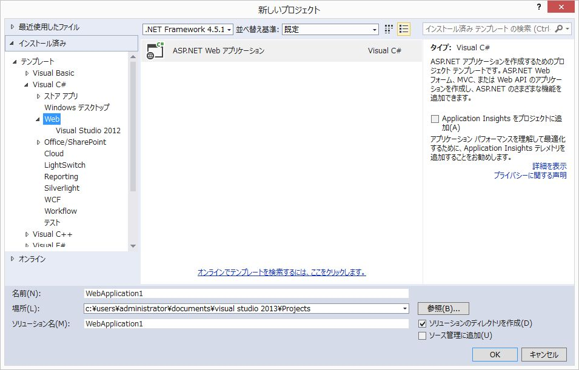
- 「テンプレートの選択」で「Empty」を選択
- 「以下にフォルダーおよびコア参照を追加：」で「MVC」にチェックしてください。
- 「OK」をクリックします。

- 以下の様なフォルダ構成になります。
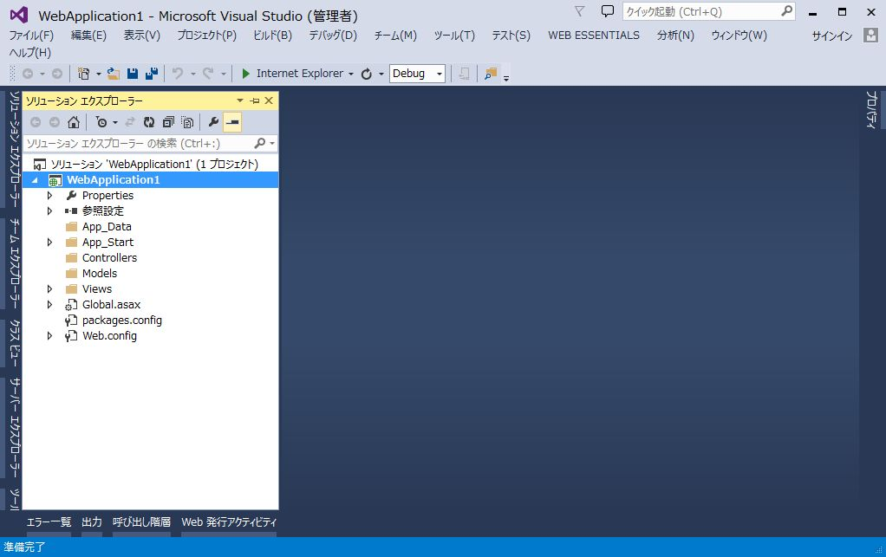
Entity Framework のインストール
NuGetを使用して、最新のEntity Frameworkをインストールします。
Entity Framework
Entity Framework (EF) は、.NET 開発者がドメイン固有のオブジェクトを使用してリレーショナル データを処理できるようにするオブジェクト リレーショナル マッパーです。 開発者が通常、記述する必要のあるデータ アクセス コードがほとんど不要になります。
NuGet
Visual Studio用のパッケージ管理システム。 rubyのgemやpythonのpipのようなツール。
手順
- 「ソリューション エクスプローラー」でプロジェクト名を右クリック
- 「NuGet パッケージ マネージャー」→「ソリューションの NuGet パッケージの管理」を選択します。

EntityFrameworkを検索し、「インストール」をクリックします。- NuGetパッケージをインストールする際は、名前、作成者、バージョンを確認するようにしてください。似たような名称のパッケージが多数あります。

- 画面の指示に従ってインストールを進めます。
- インストール完了後、
EntityFrameworkにチェックが入っている事を確認します。 - 「閉じる」をクリックします。
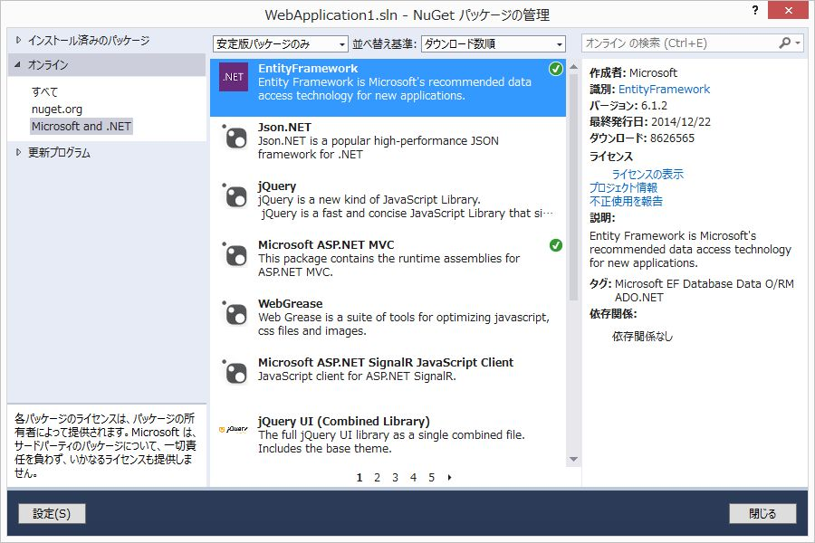
Modelの作成
Entity Framework の コード ファースト開発
データ構造を表現するPOCO (Plain Old Clr Object: 特別なクラスやインターフェイスを継承していないクラス(のオブジェクト)) と POCOを管理する Contextクラスを定義することで、Entity Frameworkが必要なテーブルを生成します。 (開発段階においてDatabaseの操作は全く必要ありません。)
`Entity Framework 4.1` から提供された機能です。
詳細については Entity Framework (EF) の概要 を参照してください。
Todoクラスの作成
Modelsを右クリックし、「追加」→「クラス」を選択します。
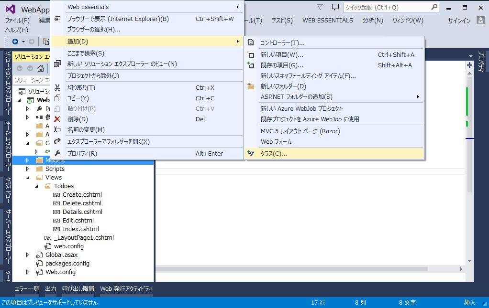
- 名前を
Todo.csとし、「追加」をクリックします。
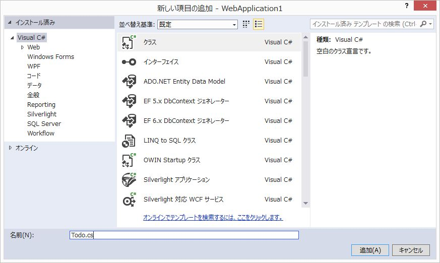
Todo.cs
using System;
using System.Collections.Generic;
using System.Linq;
using System.Web;
using System.ComponentModel;
namespace WebApplication1.Models
{
/// <summary>
/// ToDoモデル
/// </summary>
public class Todo
{
public int id { get; set; }
[DisplayName("概要")]
public string summary { get; set; }
[DisplayName("詳細")]
public string detail { get; set; }
[DisplayName("期限")]
public DateTime limit { get; set; }
[DisplayName("完了")]
public bool done { get; set; }
}
}
DisplayNameに表示名を設定します。
Viewで項目が表示される時に、ここに設定した文言が使用されます。
TodoesContextクラスの作成
Modelsを右クリックし、「追加」→「クラス」を選択します。- 名前を
TodoesContext.csとし、「追加」をクリックします。
TodoesContext.cs
using System;
using System.Collections.Generic;
using System.Data.Entity;
using System.Linq;
using System.Web;
namespace WebApplication1.Models
{
public class TodoesContext : DbContext
{
public DbSet<Todo> Todoes { get; set; }
}
}
ControllerとViewの作成
共通レイアウトの作成
Viewsを右クリックし、「追加」→「MVC 5 レイアウト ページ (Razor)」 を選択します。
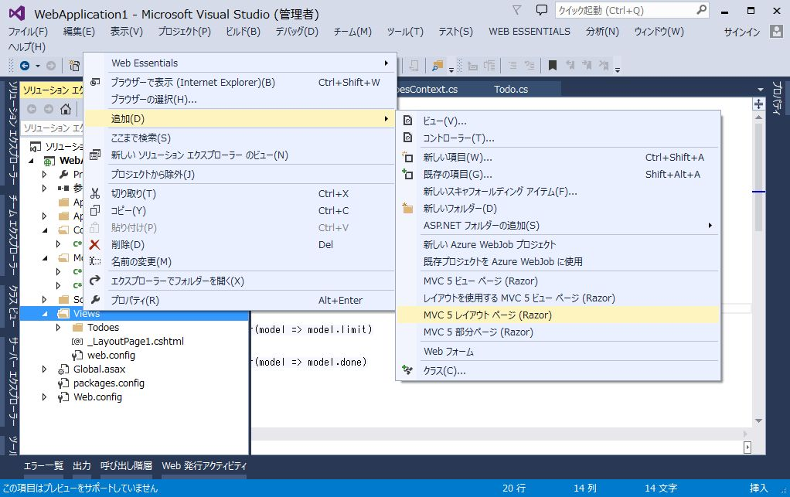
_LayoutPage1.cshtml
<!DOCTYPE html>
<html>
<head>
<meta charset="utf-8">
<meta http-equiv="X-UA-Compatible" content="IE=edge">
<meta name="viewport" content="width=device-width, initial-scale=1">
<title>@ViewBag.Title</title>
<link rel="stylesheet" href="https://maxcdn.bootstrapcdn.com/bootstrap/3.3.2/css/bootstrap.min.css">
</head>
<body>
<div class="container">
@RenderBody()
</div>
</body>
</html>
Bootstrapを読み込むように指定します。
また、divにclass="container"の指定を追加します。
Controllerの作成
スキャフォールディング(Scaffolding、「骨組み」「足場」という意味)によって、 Create（作成）、Read（参照）、Update（更新）、Delete（削除）のような定型的なコードの骨組みを自動生成できます。
Controllersを右クリックし、「追加」→「コントローラー」を選択します。
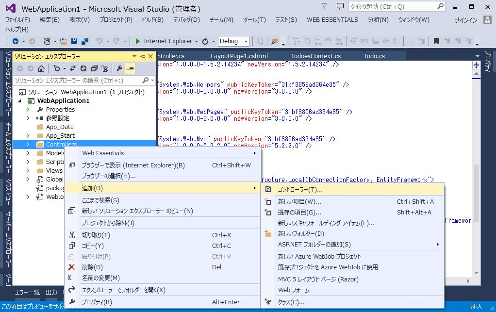
- 「Entity Framework を使用した、ビューがある MVC 5 コントローラー」を選択し、「追加」をクリックします。
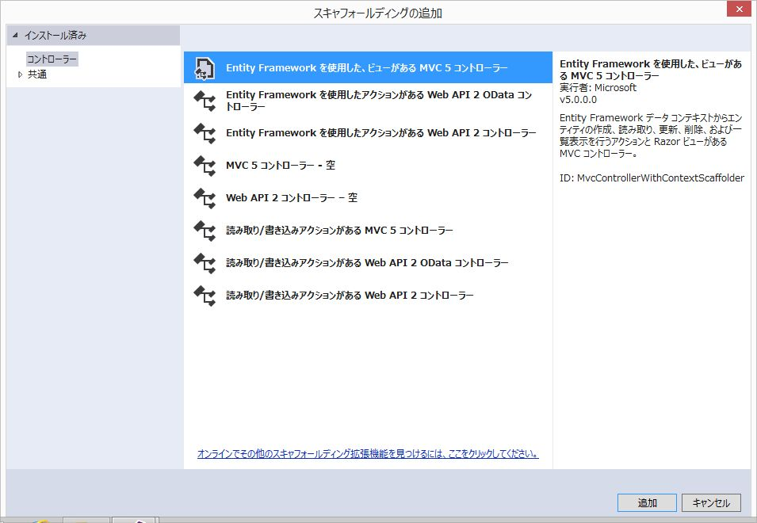
- 以下のように入力します。
- モデル クラス:
Todo - データ コンテキスト クラス:
TodoesContext - レイアウトページの使用:
~/Views/_LayoutPage1.cshtml - コントローラー名:
TodoesController
- モデル クラス:
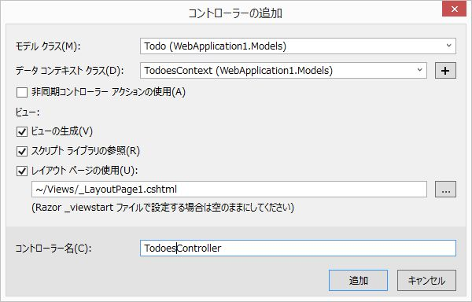
以下のファイルが生成されます。
- Controllers/
- TodoesController.cs
- Views/Todoes/
- Create.cshtml
- Delete.cshtml
- Details.cshtml
- Edit.cshtml
- Index.cshtml
デフォルトページの設定
App_Start/RouteConfig.cs を修正し、デフォルトのページを
ToDoの一覧ページに変更します。
using System;
using System.Collections.Generic;
using System.Linq;
using System.Web;
using System.Web.Mvc;
using System.Web.Routing;
namespace WebApplication1
{
public class RouteConfig
{
public static void RegisterRoutes(RouteCollection routes)
{
routes.IgnoreRoute("{resource}.axd/{*pathInfo}");
routes.MapRoute(
name: "Default",
url: "{controller}/{action}/{id}",
defaults: new { controller = "Todoes", action = "Index", id = UrlParameter.Optional }
);
}
}
}
デバッグ実行
F5キーを押して、デバッグ実行を行います。 ブラウザが起動し、一覧ページが表示されます。
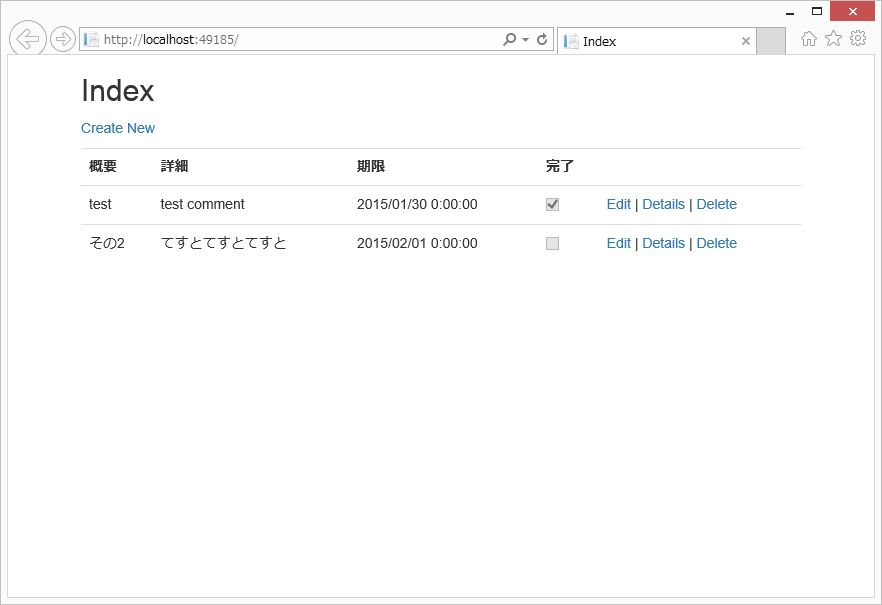
ToDoの追加、変更、削除が行えることを確認します。
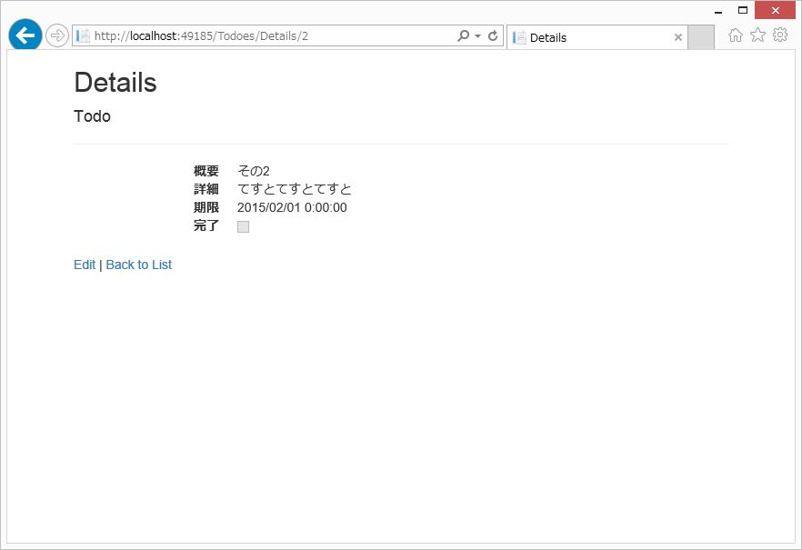
ASP.NET MVC 5 と Entity Framework 6 を活用して、非常にシンプルなWebアプリケーションを、簡単・簡潔に作成する手順について解説しました。
ほとんどコーディングを行わずに、基本的な CRUD を行うアプリケーションが作成できることに驚かれたと思います。
また、デバッグ実行したブラウザで F12 キーを押し、開発者ツールを起動すると分かりますが
生成されるHTMLは見通しがよく、JavaScriptやCSSでの操作が容易です。
生成されるViewはBootstrapやjQueryを使用することを想定した作りになっていますので
特別な対応を行わなくても、ある程度見栄えのするアプリケーションが作成できます。